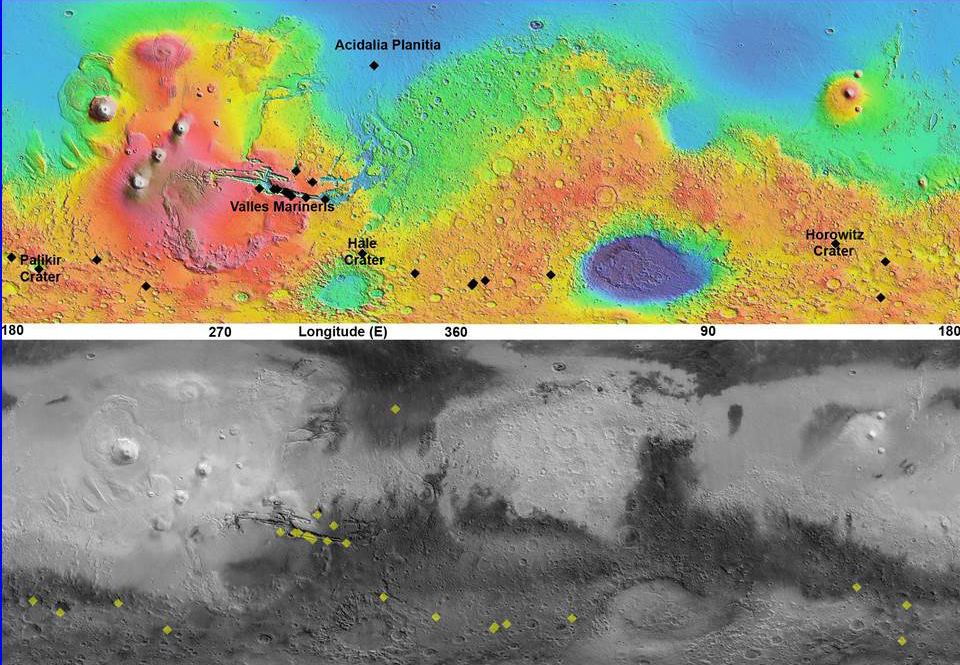

Climate of Mars
Although Mars is smaller than the Earth, 11% of Earth's mass, and 50% farther from the Sun than the Earth, its climate has important similarities, such as the presence of polar ice caps, seasonal changes and observable weather patterns. It has attracted sustained study from planetologists and climatologists. While Mars' climate has similarities to Earth's, including periodic ice ages, there are also important differences, such as much lower thermal inertia. Mars' atmosphere has a scale height of approximately 11 km (36,000 ft), 60% greater than that on Earth. The climate is of considerable relevance to the question of whether life is or ever has been present on the planet.

Mars can be viewed from Earth with the naked eye, as can its reddish coloring. This appearance, due to the iron oxide prevalent on its surface, has led to Mars often being called the Red Planet. It is among the brightest objects in Earth's sky, with an apparent magnitude that reaches −2.94, comparable to that of Jupiter and surpassed only by Venus, the Moon and the Sun. Mars has been observed since ancient times. Over the millennia it has been featured in culture and the arts in ways that have reflected humanity's growing knowledge of it.
